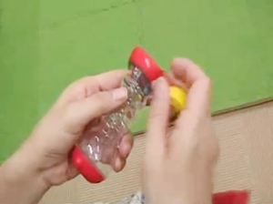

<!-- main -->
<div id="main">

<div id="kyouzai">

<div class="block">
<h3>特別教材･<br />おでかけストラップの取りつけ方</h3>



<p>おでかけストラップに教材をつける方法とおでかけストラップをベビーカーにつける方法の動画です。</p>
</div><!-- /.block -->
<a href="http://www.youtube.com/watch?v=fs2KX13V9HU" data-role="button" data-theme="e" rel="external">YouTubeへ(約20秒)</a>
<br />


<div class="block">
<p class="tx_gray">※モバイルYouTubeを利用して動画をご覧いただけます。<br />
※モバイルYouTubeは大量のパケット通信をおこなうアプリケーションです。携帯端末からYouTubeで動画を見る前に、ご契約の携帯電話のプランが「パケット定額サービス」かどうかご確認ください。<br />
※ご利用の機種によっては動画が見られないことがあります。<br />
※音声つきです｡マナーモードを解除してお使いください｡<br /></p>
</div><!-- /.block -->

</div><!-- /#kyouzai -->

</div><!-- /#main -->
